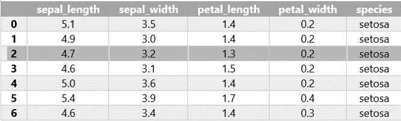
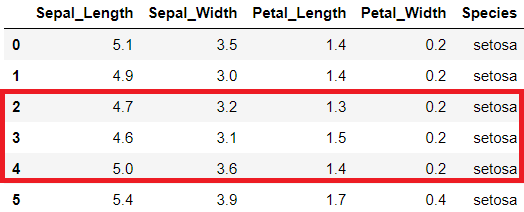

11. Pandas#
Önceki bölümde gördüğümüz Numpy paketi, veri saklama açısından oldukça hızlı ve etkin bir paket olmakla birlikte farklı türde verilerin bir arada kullanılması, verilerden seçim yapma gibi konularda yetersiz kalabilmektedir. Pandas paketi hem yüksek performanslı hem de esnek bir veri analizi ihtiyacından doğmuş ve Wes McKinney tarafından geliştirilmiştir. Pandas da esas olarak iki temel veri nesnesi bulunmaktadır: seriler (series) ve veri tabloları (dataframes).
11.1. Pandas Serileri#
Pandas serilerini sıra numalaraları olan (endekslenmiş) bir boyutlu diziler olarak düşünebiliriz. Pandas serisi aşağıdaki gibi tanımlanır. Nasıl ki Numpy paketini aktarırken geleneksel olarak np kısaltması kullanılıyorsa pandas paketi için de genel olarak pd kısaltması kullanılıyor.
import pandas as pd
pandas_seri = pd.Series( [5, 7, 3, 10, 8, 6] )
pandas_seri
0 5
1 7
2 3
3 10
4 8
5 6
dtype: int64
Varsayılan olaran Pandas serilerinin endeksi 0’dan başlayan ardışık tamsayılardır. Ancak dilersek farklı endeks isimleri de kullanabiliriz.
pandas_seri = pd.Series([5, 7, 3, 10, 8, 6],
index = ['a', 'b', 'c', 'd', 'e', 'f'])
pandas_seri
a 5
b 7
c 3
d 10
e 8
f 6
dtype: int64
Bu yönüyle serileri bir çeşit sözlük (dictionary) veri yapısı gibi de düşünebiliriz. Ancak sözlüklerde arka arkaya gelen verileri seçmek mümkün değilken serilerde bu mümkündür.
11.2. Pandas Data Frame#
Veri analizinde kullanılan verilerin formatı çok farklı olabilmektedir. Buna karşın günlük çalışmalarımızda kullandığımız veriler çoğu zaman satır ve sütunlardan oluşan tablolardan oluşmaktadır. Bu tür verileri iki boyutlu veriler olarak da isimlendirebiliriz. Bu nedenledir ki basit veri işlemlerinde en çok kullanılan program MS Excel veya benzeri programlardır. Bu tür programlar ile satır ve sütunlarda gösterilebilecek verileri rahatlıkla saklamak ve bunlar üzerinde çeşitli analizler ve hesaplamalar yapmak mümkündür. Bu tür programların kullanım kolaylığı da yaygın olarak kullanılmalarında bir başka etkendir. Örneğin, R programlama dilinin yaygınlaşmasının en önemli sebeplerinden birisi de farklı veri tipindeki sütunlardan oluşan verilerle analiz, modelleme gibi işlemleri kolaylaştırmasıdır.
Diğer yandan kullanılan veri kümelerinin büyüklüğü arttıkça bu tür programlarda veri işleme ve analiz çok zor ve yavaş bir hale gelmektedir. Bilgisayar donanım teknolojinin önceki yıllara nazaran çok daha gelişmiş olduğu günümüzde dahi birçok bilgisayar birkaç yüz bin satırlık bir dosya bile hele bir de formüller içeriyorsa bilgisayarı zorlayabilmekte ve çalışmaları oldukça yavaşlatabilmektedir. Aşağıda görülen veri seti yapay öğrenme konusunda çok sık kullanılan iris veri kümesinin bir bölümünü göstermektedir. Bu veri kümesinde 150 iris çiçeğine ait (tabloda bir kısmı gösterilmiştir) çanak (sepal) ve taç (petal) yapraklarının en ve boy ölçümleri yapılmış ve üç farklı tür için bu ölçümler kaydedilmiştir.

Tablo şeklindeki bir başka deyişle iki boyutlu veri kümelerinde her satır bir gözlemi ya da bir ölçümü belirtmektedir. Her sütun ise bu gözlemlere ilişkin farklı özellikleri yani değişkenleri belirtmektedir. Örneğin, yukarıdaki tabloda her satır bir çiçek için yapılan ölçümü ifade etmektedir. Sütunlarda ise her bir ölçüme ait farklı özellikler (çanak yaprak en ve boyu ile taç yaprak en ve boyu) ve çiçek türü (setosa, versicolor, virginica) yer almaktadır.
Neyse ki Matlab, R gibi diller gibi Python’da da iki (ve daha fazla) boyutlu veri kümeleri için kullanılabilecek paketler mevcuttur. Bunlar arasında yer alan numpy paketini daha önce görmüştük. Numpy paketinin bir eksikliği, numpy dizilerinin sadece aynı türde verilerden oluşabilmesidir. Ancak, gerçek hayatta kullandığımız birçok veri kümesi farklı sütunlarda farklı veri türleri içerebilmektedir. Örneğin, yukarıdaki tabloda ilk dört sütundaki veriler sayısal, son sütundaki veri tipi ise metin türündedir.
Pandas paketinde yukarıdaki gibi iki boyutlu veri kümeleri data frame (veri çerçevesi) olarak isimlendirilir (bundan sonra data frame terimi kullanılacaktır). Veri çerçeveleri, Python’da veri analizini son derece kolaylaştıran çok kullanışlı veri yapılarıdır. R programlama dilini bilenler için Pandas data frame, R’daki data frame ile aynıdır. Data frame yukarıda anlattığımız iki boyutlu veri kümesi özelliklerini taşır. Her satırda bir gözlem, her sütunda da farklı bir değişken yer alır. Bir sütunda yer alan tüm veriler aynı tiptedir ama farklı sütunlarda farklı veri türleri yer alabilir. Data frameler, veri bilimi açısından çok faydalı veri yapılarıdır. Bunları kullanarak betimsel ve çıkarımsal veri analizi yapmak, istatistiksel modeller kurmak, verileri görselleştirmek daha kolaydır. Bunlardan olayı veri biliminde Python kullananlar için Pandas modülünden faydalanmak neredeyse standart hale gelmiştir.
Bir pandas data frame oluşturmak için farklı yöntemler vardır. Bunlardan bir tanesi sözlük veri yapısını kullanmaktır. Şimdi yukarıda yer alan tabloyu oluşturmak için önce bu verileri bir sözlük olarak tanımlayalım.
iris_dict = {
'Sepal_Length':[5.1, 4.9, 4.7, 4.6, 5.0, 6.7, 6.3, 6.5, 6.2, 5.9],
'Sepal_Width' :[3.5, 3.0, 3.2, 3.1, 3.6, 3.0, 2.5, 3.0, 3.4, 3.0],
'Petal_Length':[1.4, 1.4, 1.3, 1.5, 1.4, 5.2, 5.0, 5.2, 5.4, 5.1],
'Petal_Width' :[0.2, 0.2, 0.2, 0.2, 0.2, 2.3, 1.9, 2.0, 2.3, 1.8],
'Species' :['setosa', 'setosa', 'setosa', 'setosa', 'setosa',
'virginica', 'virginica', 'virginica','virginica',
'virginica']
}
iris_dict
{'Sepal_Length': [5.1, 4.9, 4.7, 4.6, 5.0, 6.7, 6.3, 6.5, 6.2, 5.9],
'Sepal_Width': [3.5, 3.0, 3.2, 3.1, 3.6, 3.0, 2.5, 3.0, 3.4, 3.0],
'Petal_Length': [1.4, 1.4, 1.3, 1.5, 1.4, 5.2, 5.0, 5.2, 5.4, 5.1],
'Petal_Width': [0.2, 0.2, 0.2, 0.2, 0.2, 2.3, 1.9, 2.0, 2.3, 1.8],
'Species': ['setosa',
'setosa',
'setosa',
'setosa',
'setosa',
'virginica',
'virginica',
'virginica',
'virginica',
'virginica']}
Sonrasında da pandas paketini import komutu ile içeri aktarıyoruz.
import pandas as pd
Son olarak yukarıda tanımladığımız sözlüğü pandas DataFrame veri tipine dönüştürmek için .DataFrame() metodunu kullanıyoruz. Oluşturulan dataframe’in satırları sıfırdan başlamak üzere numaralandırılır.
iris = pd.DataFrame(iris_dict)
print(iris)
Sepal_Length Sepal_Width Petal_Length Petal_Width Species
0 5.1 3.5 1.4 0.2 setosa
1 4.9 3.0 1.4 0.2 setosa
2 4.7 3.2 1.3 0.2 setosa
3 4.6 3.1 1.5 0.2 setosa
4 5.0 3.6 1.4 0.2 setosa
5 6.7 3.0 5.2 2.3 virginica
6 6.3 2.5 5.0 1.9 virginica
7 6.5 3.0 5.2 2.0 virginica
8 6.2 3.4 5.4 2.3 virginica
9 5.9 3.0 5.1 1.8 virginica
Şimdi biraz daha uzun bir yöntem görelim. Bu yöntemi pek kullanmayacak olsak da farklı veri yapılarını tekrar etmek için iyi bir fırsat. Bu yöntemde dataframe sütunlarını önce listeler olarak tanımlıyoruz. Daha sonra sütun isimleri ve sütunları zip fonksiyonunu kullanarak tuple verilerden oluşan bir listeye çeviriyoruz. Burada zipledikten sonra tekrar list fonksiyonunu kullandığımıza dikkat edin. Sonraki aşamada zip veri yapısını sözlüğe ve en son olarak da sözlüğü Pandas data frame’e çeviriyoruz.
# Önce sütunları liste olarak tanımlayalım.
Sepal_Length = [5.1, 4.9, 4.7, 4.6, 5.0, 6.7, 6.3, 6.5, 6.2, 5.9]
Sepal_Width = [3.5, 3.0, 3.2, 3.1, 3.6, 3.0, 2.5, 3.0, 3.4, 3.0]
Petal_Length = [1.4, 1.4, 1.3, 1.5, 1.4, 5.2, 5.0, 5.2, 5.4, 5.1]
Petal_Width = [0.2, 0.2, 0.2, 0.2, 0.2, 2.3, 1.9, 2.0, 2.3, 1.8]
Species = ['setosa', 'setosa', 'setosa', 'setosa', 'setosa', 'virginica',
'virginica', 'virginica', 'virginica', 'virginica']
sutun_isimleri = ['Sepal_Length', 'Sepal_Width', 'Petal_Length', 'Petal_Width', 'Species']
sutunlar = [Sepal_Length, Sepal_Width, Petal_Length, Petal_Width]
# Sütun isimleri ve sütunları zip fonksiyonu ile bir araya getirelim.
zip_veri = list(zip(sutun_isimleri, sutunlar))
print(zip_veri)
[('Sepal_Length', [5.1, 4.9, 4.7, 4.6, 5.0, 6.7, 6.3, 6.5, 6.2, 5.9]), ('Sepal_Width', [3.5, 3.0, 3.2, 3.1, 3.6, 3.0, 2.5, 3.0, 3.4, 3.0]), ('Petal_Length', [1.4, 1.4, 1.3, 1.5, 1.4, 5.2, 5.0, 5.2, 5.4, 5.1]), ('Petal_Width', [0.2, 0.2, 0.2, 0.2, 0.2, 2.3, 1.9, 2.0, 2.3, 1.8])]
# Ziplenmiş veriyi sözlük veri yapısına çevirelim
veri = dict(zip_veri)
print(veri)
{'Sepal_Length': [5.1, 4.9, 4.7, 4.6, 5.0, 6.7, 6.3, 6.5, 6.2, 5.9], 'Sepal_Width': [3.5, 3.0, 3.2, 3.1, 3.6, 3.0, 2.5, 3.0, 3.4, 3.0], 'Petal_Length': [1.4, 1.4, 1.3, 1.5, 1.4, 5.2, 5.0, 5.2, 5.4, 5.1], 'Petal_Width': [0.2, 0.2, 0.2, 0.2, 0.2, 2.3, 1.9, 2.0, 2.3, 1.8]}
# Son olarak sözlüğü Veri Çerçevesine çevirelim.
iris = pd.DataFrame(veri)
print(iris)
Sepal_Length Sepal_Width Petal_Length Petal_Width
0 5.1 3.5 1.4 0.2
1 4.9 3.0 1.4 0.2
2 4.7 3.2 1.3 0.2
3 4.6 3.1 1.5 0.2
4 5.0 3.6 1.4 0.2
5 6.7 3.0 5.2 2.3
6 6.3 2.5 5.0 1.9
7 6.5 3.0 5.2 2.0
8 6.2 3.4 5.4 2.3
9 5.9 3.0 5.1 1.8
Varolan bir veri çerçevesine yeni bir sütun eklemek de mümkündür.
iris['Gözlem_No'] = 1
print(iris)
Sepal_Length Sepal_Width Petal_Length Petal_Width Gözlem_No
0 5.1 3.5 1.4 0.2 1
1 4.9 3.0 1.4 0.2 1
2 4.7 3.2 1.3 0.2 1
3 4.6 3.1 1.5 0.2 1
4 5.0 3.6 1.4 0.2 1
5 6.7 3.0 5.2 2.3 1
6 6.3 2.5 5.0 1.9 1
7 6.5 3.0 5.2 2.0 1
8 6.2 3.4 5.4 2.3 1
9 5.9 3.0 5.1 1.8 1
Yukarıda aktardığımız, sözlükten data frame üretme yöntemi günlük hayatta kullanılabilecek bir yöntem değildir. Gerçekte çok büyük verilerle çalıştığımızı düşünürsek tek tek bütün verilerin sözlük olarak girilmesi mümkün değildir.
Günlük hayatta kullandığımız veriler genelce excel, csv gibi formatlarda gelir. Pandas ile farklı formatlardan veri okuma konusunu sonraki bölümlerde ayrıntılı olarak göreceğiz. Şimdilik bir şekilde iris veri setini datframe olarak okuduğumuzu düşünelim. Aşağıda bunu yapıyoruz. Şimdilik aşağıda yer alan kodu görmezden gelin ve sadece iris veri setini dataframe olarak okuduğumuzu düşünelim.
import seaborn as sns
iris = sns.load_dataset("iris")
Data frame hangi sütunlardan oluşuyor? Bunu görmek için .columns özelliğini kullanabiliriz.
iris.columns
Index(['sepal_length', 'sepal_width', 'petal_length', 'petal_width',
'species'],
dtype='object')
Aynı şekilde bir data frame’in sütun isimlerini değiştirmek de mümkündür.
iris.columns = ["SepalLength", "SepalWidth", "PetalLength", "PetalWidth", "Species"]
print(iris)
SepalLength SepalWidth PetalLength PetalWidth Species
0 5.1 3.5 1.4 0.2 setosa
1 4.9 3.0 1.4 0.2 setosa
2 4.7 3.2 1.3 0.2 setosa
3 4.6 3.1 1.5 0.2 setosa
4 5.0 3.6 1.4 0.2 setosa
.. ... ... ... ... ...
145 6.7 3.0 5.2 2.3 virginica
146 6.3 2.5 5.0 1.9 virginica
147 6.5 3.0 5.2 2.0 virginica
148 6.2 3.4 5.4 2.3 virginica
149 5.9 3.0 5.1 1.8 virginica
[150 rows x 5 columns]
Iris data frameinin genel yapısını incelemek için .head() metodunu kullanabiliriz. Bu metod da argüman olarak görmek istediğimiz satır sayısını iletebiliriz. Herhangi bir değer beştir.
iris.head(10)
| SepalLength | SepalWidth | PetalLength | PetalWidth | Species | |
|---|---|---|---|---|---|
| 0 | 5.1 | 3.5 | 1.4 | 0.2 | setosa |
| 1 | 4.9 | 3.0 | 1.4 | 0.2 | setosa |
| 2 | 4.7 | 3.2 | 1.3 | 0.2 | setosa |
| 3 | 4.6 | 3.1 | 1.5 | 0.2 | setosa |
| 4 | 5.0 | 3.6 | 1.4 | 0.2 | setosa |
| 5 | 5.4 | 3.9 | 1.7 | 0.4 | setosa |
| 6 | 4.6 | 3.4 | 1.4 | 0.3 | setosa |
| 7 | 5.0 | 3.4 | 1.5 | 0.2 | setosa |
| 8 | 4.4 | 2.9 | 1.4 | 0.2 | setosa |
| 9 | 4.9 | 3.1 | 1.5 | 0.1 | setosa |
Benzer şekilde, son satırları görmek için de .tail() metodu kullanılır. Bu metoda da aynı biçimde sondan kaç satırı görmek istediğimiz yazılabilir.
iris.tail(4)
| SepalLength | SepalWidth | PetalLength | PetalWidth | Species | |
|---|---|---|---|---|---|
| 146 | 6.3 | 2.5 | 5.0 | 1.9 | virginica |
| 147 | 6.5 | 3.0 | 5.2 | 2.0 | virginica |
| 148 | 6.2 | 3.4 | 5.4 | 2.3 | virginica |
| 149 | 5.9 | 3.0 | 5.1 | 1.8 | virginica |
Yukarıdaki komutu Jupyter Python defteri kullanarak yazdım ve yukarıda gördüğünüz tablo formatlarını da yine aynı programdan aldım. PyCharm gibi entegre kodlama programlarında sadece yazdırmak istediğiniz veri yapısının adını girmeniz (örneğin iris) herhangi bir sonuç vermeyecektir. Bir veri yapısının tamamını ya da bir kısmını yazdırmak için print() fonksiyonunu kullanmanız gerekir. Diğer yandan Jupyter gibi daha çok veri analizi için geliştirilmiş ortamlarda doğrudan verinin adını yazmanız yetecektir. Jupyter’de print fonksiyonu kullanırsanız da sonuç alırsınız ancak format biraz daha farklı olur.
print(iris.tail(4))
SepalLength SepalWidth PetalLength PetalWidth Species
146 6.3 2.5 5.0 1.9 virginica
147 6.5 3.0 5.2 2.0 virginica
148 6.2 3.4 5.4 2.3 virginica
149 5.9 3.0 5.1 1.8 virginica
Data frame boyutlarına yani kaç satır ve kaç sütundan oluştuğuna bakalım.
iris.shape
(150, 5)
Data frame bilgilerini alabileceğimiz bir diğer metod da .info() metodudur ancak bu metod istatistiksel özellikler yerine sütunların veri tipi, veri çerçevesindeki satır sayısı, her bir sütundaki veri sayısı gibi değerleri verir.
iris.info()
<class 'pandas.core.frame.DataFrame'>
RangeIndex: 150 entries, 0 to 149
Data columns (total 5 columns):
# Column Non-Null Count Dtype
--- ------ -------------- -----
0 SepalLength 150 non-null float64
1 SepalWidth 150 non-null float64
2 PetalLength 150 non-null float64
3 PetalWidth 150 non-null float64
4 Species 150 non-null object
dtypes: float64(4), object(1)
memory usage: 6.0+ KB
Bir data frame’i olduğu gibi başka bir data frame’e aktarmak için .copy() metodunu kullanabiliriz.
iris_yeni = iris.copy()
Pandas paketinin, Numpy paketi üzerinde geliştirildiğini daha önce belirtmiştik. İstenirse bir pandas veri çerçevesini .values özelliğini kullanarak numpy dizisine çevirebiliriz.
np_dizi = iris.values
print(np_dizi)
[[5.1 3.5 1.4 0.2 'setosa']
[4.9 3.0 1.4 0.2 'setosa']
[4.7 3.2 1.3 0.2 'setosa']
[4.6 3.1 1.5 0.2 'setosa']
[5.0 3.6 1.4 0.2 'setosa']
[5.4 3.9 1.7 0.4 'setosa']
[4.6 3.4 1.4 0.3 'setosa']
[5.0 3.4 1.5 0.2 'setosa']
[4.4 2.9 1.4 0.2 'setosa']
[4.9 3.1 1.5 0.1 'setosa']
[5.4 3.7 1.5 0.2 'setosa']
[4.8 3.4 1.6 0.2 'setosa']
[4.8 3.0 1.4 0.1 'setosa']
[4.3 3.0 1.1 0.1 'setosa']
[5.8 4.0 1.2 0.2 'setosa']
[5.7 4.4 1.5 0.4 'setosa']
[5.4 3.9 1.3 0.4 'setosa']
[5.1 3.5 1.4 0.3 'setosa']
[5.7 3.8 1.7 0.3 'setosa']
[5.1 3.8 1.5 0.3 'setosa']
[5.4 3.4 1.7 0.2 'setosa']
[5.1 3.7 1.5 0.4 'setosa']
[4.6 3.6 1.0 0.2 'setosa']
[5.1 3.3 1.7 0.5 'setosa']
[4.8 3.4 1.9 0.2 'setosa']
[5.0 3.0 1.6 0.2 'setosa']
[5.0 3.4 1.6 0.4 'setosa']
[5.2 3.5 1.5 0.2 'setosa']
[5.2 3.4 1.4 0.2 'setosa']
[4.7 3.2 1.6 0.2 'setosa']
[4.8 3.1 1.6 0.2 'setosa']
[5.4 3.4 1.5 0.4 'setosa']
[5.2 4.1 1.5 0.1 'setosa']
[5.5 4.2 1.4 0.2 'setosa']
[4.9 3.1 1.5 0.2 'setosa']
[5.0 3.2 1.2 0.2 'setosa']
[5.5 3.5 1.3 0.2 'setosa']
[4.9 3.6 1.4 0.1 'setosa']
[4.4 3.0 1.3 0.2 'setosa']
[5.1 3.4 1.5 0.2 'setosa']
[5.0 3.5 1.3 0.3 'setosa']
[4.5 2.3 1.3 0.3 'setosa']
[4.4 3.2 1.3 0.2 'setosa']
[5.0 3.5 1.6 0.6 'setosa']
[5.1 3.8 1.9 0.4 'setosa']
[4.8 3.0 1.4 0.3 'setosa']
[5.1 3.8 1.6 0.2 'setosa']
[4.6 3.2 1.4 0.2 'setosa']
[5.3 3.7 1.5 0.2 'setosa']
[5.0 3.3 1.4 0.2 'setosa']
[7.0 3.2 4.7 1.4 'versicolor']
[6.4 3.2 4.5 1.5 'versicolor']
[6.9 3.1 4.9 1.5 'versicolor']
[5.5 2.3 4.0 1.3 'versicolor']
[6.5 2.8 4.6 1.5 'versicolor']
[5.7 2.8 4.5 1.3 'versicolor']
[6.3 3.3 4.7 1.6 'versicolor']
[4.9 2.4 3.3 1.0 'versicolor']
[6.6 2.9 4.6 1.3 'versicolor']
[5.2 2.7 3.9 1.4 'versicolor']
[5.0 2.0 3.5 1.0 'versicolor']
[5.9 3.0 4.2 1.5 'versicolor']
[6.0 2.2 4.0 1.0 'versicolor']
[6.1 2.9 4.7 1.4 'versicolor']
[5.6 2.9 3.6 1.3 'versicolor']
[6.7 3.1 4.4 1.4 'versicolor']
[5.6 3.0 4.5 1.5 'versicolor']
[5.8 2.7 4.1 1.0 'versicolor']
[6.2 2.2 4.5 1.5 'versicolor']
[5.6 2.5 3.9 1.1 'versicolor']
[5.9 3.2 4.8 1.8 'versicolor']
[6.1 2.8 4.0 1.3 'versicolor']
[6.3 2.5 4.9 1.5 'versicolor']
[6.1 2.8 4.7 1.2 'versicolor']
[6.4 2.9 4.3 1.3 'versicolor']
[6.6 3.0 4.4 1.4 'versicolor']
[6.8 2.8 4.8 1.4 'versicolor']
[6.7 3.0 5.0 1.7 'versicolor']
[6.0 2.9 4.5 1.5 'versicolor']
[5.7 2.6 3.5 1.0 'versicolor']
[5.5 2.4 3.8 1.1 'versicolor']
[5.5 2.4 3.7 1.0 'versicolor']
[5.8 2.7 3.9 1.2 'versicolor']
[6.0 2.7 5.1 1.6 'versicolor']
[5.4 3.0 4.5 1.5 'versicolor']
[6.0 3.4 4.5 1.6 'versicolor']
[6.7 3.1 4.7 1.5 'versicolor']
[6.3 2.3 4.4 1.3 'versicolor']
[5.6 3.0 4.1 1.3 'versicolor']
[5.5 2.5 4.0 1.3 'versicolor']
[5.5 2.6 4.4 1.2 'versicolor']
[6.1 3.0 4.6 1.4 'versicolor']
[5.8 2.6 4.0 1.2 'versicolor']
[5.0 2.3 3.3 1.0 'versicolor']
[5.6 2.7 4.2 1.3 'versicolor']
[5.7 3.0 4.2 1.2 'versicolor']
[5.7 2.9 4.2 1.3 'versicolor']
[6.2 2.9 4.3 1.3 'versicolor']
[5.1 2.5 3.0 1.1 'versicolor']
[5.7 2.8 4.1 1.3 'versicolor']
[6.3 3.3 6.0 2.5 'virginica']
[5.8 2.7 5.1 1.9 'virginica']
[7.1 3.0 5.9 2.1 'virginica']
[6.3 2.9 5.6 1.8 'virginica']
[6.5 3.0 5.8 2.2 'virginica']
[7.6 3.0 6.6 2.1 'virginica']
[4.9 2.5 4.5 1.7 'virginica']
[7.3 2.9 6.3 1.8 'virginica']
[6.7 2.5 5.8 1.8 'virginica']
[7.2 3.6 6.1 2.5 'virginica']
[6.5 3.2 5.1 2.0 'virginica']
[6.4 2.7 5.3 1.9 'virginica']
[6.8 3.0 5.5 2.1 'virginica']
[5.7 2.5 5.0 2.0 'virginica']
[5.8 2.8 5.1 2.4 'virginica']
[6.4 3.2 5.3 2.3 'virginica']
[6.5 3.0 5.5 1.8 'virginica']
[7.7 3.8 6.7 2.2 'virginica']
[7.7 2.6 6.9 2.3 'virginica']
[6.0 2.2 5.0 1.5 'virginica']
[6.9 3.2 5.7 2.3 'virginica']
[5.6 2.8 4.9 2.0 'virginica']
[7.7 2.8 6.7 2.0 'virginica']
[6.3 2.7 4.9 1.8 'virginica']
[6.7 3.3 5.7 2.1 'virginica']
[7.2 3.2 6.0 1.8 'virginica']
[6.2 2.8 4.8 1.8 'virginica']
[6.1 3.0 4.9 1.8 'virginica']
[6.4 2.8 5.6 2.1 'virginica']
[7.2 3.0 5.8 1.6 'virginica']
[7.4 2.8 6.1 1.9 'virginica']
[7.9 3.8 6.4 2.0 'virginica']
[6.4 2.8 5.6 2.2 'virginica']
[6.3 2.8 5.1 1.5 'virginica']
[6.1 2.6 5.6 1.4 'virginica']
[7.7 3.0 6.1 2.3 'virginica']
[6.3 3.4 5.6 2.4 'virginica']
[6.4 3.1 5.5 1.8 'virginica']
[6.0 3.0 4.8 1.8 'virginica']
[6.9 3.1 5.4 2.1 'virginica']
[6.7 3.1 5.6 2.4 'virginica']
[6.9 3.1 5.1 2.3 'virginica']
[5.8 2.7 5.1 1.9 'virginica']
[6.8 3.2 5.9 2.3 'virginica']
[6.7 3.3 5.7 2.5 'virginica']
[6.7 3.0 5.2 2.3 'virginica']
[6.3 2.5 5.0 1.9 'virginica']
[6.5 3.0 5.2 2.0 'virginica']
[6.2 3.4 5.4 2.3 'virginica']
[5.9 3.0 5.1 1.8 'virginica']]
Numpy için geçerli olan metodları pandas data frame’ler için de uygulayabiliriz. Örneğin sayısal değerlerden oluşan bir veri çerçevesindeki değerlerin doğal logaritmasını bulmak için numpy paketindeki .log() metodunu uygulayabiliriz.
import numpy as np
# Önce iris'in sayısal sütunlarını seçelim
dizi = iris.iloc[:,[0,1,2,3]]
dizi_log = np.log(dizi)
print(dizi_log.head())
SepalLength SepalWidth PetalLength PetalWidth
0 1.629241 1.252763 0.336472 -1.609438
1 1.589235 1.098612 0.336472 -1.609438
2 1.547563 1.163151 0.262364 -1.609438
3 1.526056 1.131402 0.405465 -1.609438
4 1.609438 1.280934 0.336472 -1.609438
Şimdiye kadar gördüğümüz pandas serileri ve data frameler esasen bir ve iki boyutlu veri yapılarıdır. Ancak, pandas üç ve daha fazla boyutlu veri yapılarına da izin vermektedir. Bunu, pandas verilerinde çoklu indeks ekleyerek yapıyoruz. Önce bir pandas serisine çoklu indeks eklemeyi görelim. Aşağıdaki örnekte farklı hisse senetlerinin 2016 ve 2017 yılı kapanış fiyatlarını görüyoruz.
indeks = [('ABC', 2016), ('ABC', 2017),
('DEF', 2016), ('DEF', 2017),
('XYZ', 2016), ('XYZ', 2017),
('KLM', 2016), ('KLM', 2017)]
fiyatlar = [32.5, 12.3, 24.7, 18.6, 20.3, 7.2, 51.9, 56.2]
hisseler = pd.Series(fiyatlar, index = indeks)
hisseler
(ABC, 2016) 32.5
(ABC, 2017) 12.3
(DEF, 2016) 24.7
(DEF, 2017) 18.6
(XYZ, 2016) 20.3
(XYZ, 2017) 7.2
(KLM, 2016) 51.9
(KLM, 2017) 56.2
dtype: float64
Verileri bu şekilde indeksleyerek seride seçim de yapabiliriz.
hisseler[('XYZ',2016):('KLM',2017)]
(XYZ, 2016) 20.3
(XYZ, 2017) 7.2
(KLM, 2016) 51.9
(KLM, 2017) 56.2
dtype: float64
Yukarıdaki gibi çoklu indeks kullanmanın daha etkin bir yöntemi ise pandas MultiIndex kullanmaktır.
indeks = pd.MultiIndex.from_tuples(indeks)
indeks
MultiIndex([('ABC', 2016),
('ABC', 2017),
('DEF', 2016),
('DEF', 2017),
('XYZ', 2016),
('XYZ', 2017),
('KLM', 2016),
('KLM', 2017)],
)
hisseler = pd.Series(fiyatlar, index=indeks)
hisseler
ABC 2016 32.5
2017 12.3
DEF 2016 24.7
2017 18.6
XYZ 2016 20.3
2017 7.2
KLM 2016 51.9
2017 56.2
dtype: float64
İndeksleri isimlendirmek de mümkündür.
hisseler.index.names = ['Hisse', 'Yıl']
hisseler
Hisse Yıl
ABC 2016 32.5
2017 12.3
DEF 2016 24.7
2017 18.6
XYZ 2016 20.3
2017 7.2
KLM 2016 51.9
2017 56.2
dtype: float64
Yukarıdaki hisseler verisi bir boyutlu pandas verisi ancak ilk iki sütunda belirtilen iki indeksle gösteriliyor. Bu seriyi pandas modülündeki .unstack() metodunu kullanarak data frame’e çevirebiliriz.
hisseler.unstack()
| Yıl | 2016 | 2017 |
|---|---|---|
| Hisse | ||
| ABC | 32.5 | 12.3 |
| DEF | 24.7 | 18.6 |
| KLM | 51.9 | 56.2 |
| XYZ | 20.3 | 7.2 |
Data frame de .stack() metodu ile eski haline çevrilebilir. MultiIndex ile çoklu indeks oluşturmanın üç farklı yöntemi vardır.
pd.MultiIndex.from_tuples([('x', 1),('x',2), ('y',1), ('y',2)])
MultiIndex([('x', 1),
('x', 2),
('y', 1),
('y', 2)],
)
pd.MultiIndex.from_arrays([['x', 'x', 'y', 'y'], [1, 2, 1, 2]])
MultiIndex([('x', 1),
('x', 2),
('y', 1),
('y', 2)],
)
pd.MultiIndex.from_product([['x', 'y'], [1, 2]])
MultiIndex([('x', 1),
('x', 2),
('y', 1),
('y', 2)],
)
Nasıl ki satırlar için çoklu indeks oluşturabiliyorsak sütunlar için de aynı şekilde çoklu indeks oluşturabiliriz. Çoklu indeks kullanımı özellikle panel verilerle yapılan çalışmalarda oldukça faydalıdır. Şimdi yukarıdaki hisse senedi tablosuna sütunlarına her çeyrek için kapanış fiyatı ve hacim bilgisini ekleyelim.
indeks = pd.MultiIndex.from_product([['ABC', 'DEF', 'KLM'], [2016, 2017]])
sutunlar = pd.MultiIndex.from_product([['Q1', 'Q2', 'Q3', 'Q4'], ['Hacim', 'Kapanış']])
veri = np.array([10762, 32.5, 12638, 33.5, 13689, 35.2, 18414, 37.4,
10688, 12.3, 14348, 13.2, 15924, 15.3, 15243, 17.9,
14841, 24.7, 14966, 22.1, 13098, 19.3, 17439, 15.4,
15607, 18.6, 16166, 13.4, 10627, 15.1, 13396, 15.3,
12565, 20.3, 17469, 21.4, 18964, 22.5, 15187, 23.6,
13203, 7.2, 10629, 7.2, 15239, 8.2, 18307, 9.1])
veri = np.reshape(veri, (6, 8))
hisseler = pd.DataFrame(veri, index = indeks, columns = sutunlar)
hisseler
| Q1 | Q2 | Q3 | Q4 | ||||||
|---|---|---|---|---|---|---|---|---|---|
| Hacim | Kapanış | Hacim | Kapanış | Hacim | Kapanış | Hacim | Kapanış | ||
| ABC | 2016 | 10762.0 | 32.5 | 12638.0 | 33.5 | 13689.0 | 35.2 | 18414.0 | 37.4 |
| 2017 | 10688.0 | 12.3 | 14348.0 | 13.2 | 15924.0 | 15.3 | 15243.0 | 17.9 | |
| DEF | 2016 | 14841.0 | 24.7 | 14966.0 | 22.1 | 13098.0 | 19.3 | 17439.0 | 15.4 |
| 2017 | 15607.0 | 18.6 | 16166.0 | 13.4 | 10627.0 | 15.1 | 13396.0 | 15.3 | |
| KLM | 2016 | 12565.0 | 20.3 | 17469.0 | 21.4 | 18964.0 | 22.5 | 15187.0 | 23.6 |
| 2017 | 13203.0 | 7.2 | 10629.0 | 7.2 | 15239.0 | 8.2 | 18307.0 | 9.1 | |
11.3. Data Frame’de Seçim Yapma#
Bir data framedeki herhangi bir sütunu seçmek ya da görmek için df[“sütun_ismi”] formatı kullanılır. Önce data frame ismi ve yanında köşeli parantez içinde, tırnak ya da kesme işareti içinde görülmek istenen sütun ismi yazılır. Yukarıdaki iris veri setinde PetalLength sütununu görmek için iris["PetalLength"] yazarız.
iris["SepalLength"]
0 5.1
1 4.9
2 4.7
3 4.6
4 5.0
...
145 6.7
146 6.3
147 6.5
148 6.2
149 5.9
Name: SepalLength, Length: 150, dtype: float64
Veri setinin yanında tek köşeli parantez kullanırsak sütundaki veriyi bir boyutlu olarak indirir. Bunu bir liste olarak da düşünebilirsiniz. Nitekim, bu şekilde çektiğimiz verinin türünü incelediğimizde bir boyutlu Series veri tipi olduğunu görürüz.
type(iris["SepalLength"])
pandas.core.series.Series
Yukarıda da görüldüğü gibi veri çerçevesinden çektiğimiz sütunun türü .Series yani bir boyutlu bir dizidir. Eğer istediğimiz sütunun da veri çerçevesi gibi davranmasını istiyorsak sütun ismini iki köşeli parantez içine yazmamız gerekir. Sorgulamayı iris[["SepalLength"]] şeklinde iki köşeli parantez içinde yaparsak aşağıdaki şekilde bir pandas data frame ile karşılaşırız.
iris[["SepalLength"]]
| SepalLength | |
|---|---|
| 0 | 5.1 |
| 1 | 4.9 |
| 2 | 4.7 |
| 3 | 4.6 |
| 4 | 5.0 |
| ... | ... |
| 145 | 6.7 |
| 146 | 6.3 |
| 147 | 6.5 |
| 148 | 6.2 |
| 149 | 5.9 |
150 rows × 1 columns
Görüldüğü gibi data frame’den bir sütunu bir adet köşeli parantezle çekince bir boyutlu seri, iki adet köşeli parantezle çekince DataFrame veri yapısı ile karşılaşıyoruz.
Peki birden fazla sütunu çekmek istersek ne yapmamız gerekiyor? Sorgulamayı, bir adet köşeli parantezle yaptığımızda bir boyutlu seri üretildiğini söyledik. Bu nedenle örneğin iris["SepalLength", "SepalWidth"] şeklinde yazarsak hata mesajı ile karşılaşırız. Bu nedenle birden fazla değişkeni seçmek için iki adet köşeli parantez kullanmalıyız.
iris[["SepalLength", "SepalWidth"]]
| SepalLength | SepalWidth | |
|---|---|---|
| 0 | 5.1 | 3.5 |
| 1 | 4.9 | 3.0 |
| 2 | 4.7 | 3.2 |
| 3 | 4.6 | 3.1 |
| 4 | 5.0 | 3.6 |
| ... | ... | ... |
| 145 | 6.7 | 3.0 |
| 146 | 6.3 | 2.5 |
| 147 | 6.5 | 3.0 |
| 148 | 6.2 | 3.4 |
| 149 | 5.9 | 3.0 |
150 rows × 2 columns
Sütunları nasıl seçeceğimizi gördük. Şimdi de satırları nasıl seçeceğimizi görelim. Yine iris data frame ile devam edelim. Bir data frame’de belirli satırları seçmek için istediğimiz satır numaralarını arada iki nokta olacak şekilde yazıyoruz. Burada iki noktayı tekrar hatırlatmakta fayda var. Python’da indeks numaraları sıfırdan başlıyor ve indeks sondaki sayıyı kapsamıyor. Yani [2:5] indeks numaralarını yazdığımda, 2 indeks numarası ile başlayan ve 4 indeks numarası ile biten satırlar seçilecek, 5 indeks numarasına sahip satır seçilmeyecektir. İndeks numaralarının sıfırdan başladığını düşünürsek yaptığımız seçim 3. sıradaki satırla başlayıp 5. sıradaki satırla sona erecektir. Sonuç olarak iris[2:5] yazdığımızda aşağıdaki şekilde çerçeve içinde belirtilmiş olan satırlar seçilecektir.

Hatırlayacağınız gibi iki boyutlu numpy dizilerinde hem satır hem de sütunlarda seçim yapmak mümkündü. Yani belirli sütunların belirli satırlarını seçebiliyorduk. Ancak, yukarıda gösterdiğimiz seçim yöntemi hem satır hem de sütunda seçim yapmaya izin vermemektedir. Pandas paketinde satır ve sütunlardan kolayca seçim yapabilmek için .loc ve .iloc metodları geliştirilmiştir. Bunlardan, loc, location (konum), iloc ise integer location (sayısal konum) ifadelerini temsil etmektedir.
Örnek olarak aşağıdaki şekilde görülen hisselerin bir günlük açılış, en düşük, en yüksek ve kapanış fiyatlarını gösteren veri çerçevesini dikkate alalım. Aşağıdaki veri çerçevesinde satırların numaralarla değil hisse isimleri ile belirtildiğini görüyoruz. Bir data frame’de satırları bu şekilde isimlendirmek de mümkündür. Satır isimlendirme için .index() metodu kullanılır. Aşağıdaki data framein isminin hisseler olduğunu varsayalım. Bu durumda, satırları isimlendirmek için hisseler.index = ["ABC", "DEF", "KLM", "XYZ", "IJK", "VYZ", "ERN", "HEA"] yazmamız yeterlidir. Data framei bir csv dosyasından okutuyorsak ve satır isimleri de ilk sütunda ise bu durumda .read_csv() metodunda dosya yolu ve isminden sonra ikinci bir argüman olarak index_col = 0 yazmamız gerekiyor.
acilis |
en_dusuk |
en_yuksek |
kapanis |
|
|---|---|---|---|---|
ABC |
3.25 |
3.15 |
3.50 |
3.15 |
DEF |
5.48 |
5.00 |
6.00 |
6.00 |
KLM |
15.75 |
15.25 |
16.75 |
16.50 |
XYZ |
80.20 |
75.00 |
85.25 |
84.30 |
IJK |
17.50 |
16.00 |
19.00 |
18.20 |
VYZ |
25.70 |
24.10 |
27.50 |
26.80 |
ERN |
95.00 |
90.20 |
99.50 |
97.50 |
HEA |
55.00 |
53.00 |
57.40 |
59.30 |
Yukarıdaki data frame’in isminin hisseler olduğunu varsayalım. Şimdi önce ERN hissesine ait bilgileri görmek isteyelim. Öncelikle dataframe’i oluşturacağız.
hisseler_dict = {'acilis' : [3.25, 5.48, 15.75, 80.20, 17.50, 25.70, 95.00, 55.00],
'en_dusuk' : [3.15, 5.00, 15.25, 75.00, 16.00, 24.10, 90.20, 53.00],
'en_yuksek': [3.50, 6.00, 16.75, 85.25, 19.00, 27.50, 99.50, 57.40],
'kapanis' : [3.15, 6.00, 16.50, 84.30, 18.20, 26.80, 97.50, 59.30]}
hisseler = pd.DataFrame(hisseler_dict, index = ["ABC", "DEF", "KLM", "XYZ", "IJK", "VYZ", "ERN", "HEA"])
hisseler
| acilis | en_dusuk | en_yuksek | kapanis | |
|---|---|---|---|---|
| ABC | 3.25 | 3.15 | 3.50 | 3.15 |
| DEF | 5.48 | 5.00 | 6.00 | 6.00 |
| KLM | 15.75 | 15.25 | 16.75 | 16.50 |
| XYZ | 80.20 | 75.00 | 85.25 | 84.30 |
| IJK | 17.50 | 16.00 | 19.00 | 18.20 |
| VYZ | 25.70 | 24.10 | 27.50 | 26.80 |
| ERN | 95.00 | 90.20 | 99.50 | 97.50 |
| HEA | 55.00 | 53.00 | 57.40 | 59.30 |
Satır isimleri ile seçim yapmak için .loc[] (location) metodunu kullanıyoruz.
hisseler.loc["ERN"]
acilis 95.0
en_dusuk 90.2
en_yuksek 99.5
kapanis 97.5
Name: ERN, dtype: float64
Seçimi bir adet köşeli parantez kullanarak yaptığımız için sonuç seri formatında geldi. Yine data frame formatında gelmesini sağlamak için iki adet köşeli parantez kullanmamız gerektiğini hatırlayalım.
hisseler.loc[["ERN"]]
| acilis | en_dusuk | en_yuksek | kapanis | |
|---|---|---|---|---|
| ERN | 95.0 | 90.2 | 99.5 | 97.5 |
Bu şekilde birden fazla satır seçmek de mümkündür.
hisseler.loc[["ERN", "HEA"]]
| acilis | en_dusuk | en_yuksek | kapanis | |
|---|---|---|---|---|
| ERN | 95.0 | 90.2 | 99.5 | 97.5 |
| HEA | 55.0 | 53.0 | 57.4 | 59.3 |
Bir sütun ve satırdaki değeri almak için sütun ve satır isimlerini sırayla köşeli parantez içinde aşağıda görüldüğü gibi belirtmek de mümkündür. Önce sütun daha sonra satır ismi belirttiğimize dikkat edin.
hisseler['acilis']['ERN']
95.0
Aynı seçimi aşağıdaki şekilde de yapabiliriz.
hisseler.acilis['ERN']
95.0
Şimdi de birden fazla satır ve sütun ismi kullanarak seçim yapmayı görelim. Bu tür seçimlerde .loc özelliğini kullanırız. Bunun için de istediğimiz satır ve sütunları virgülle ayrılmış iki ayrı liste olarak iletmemiz gerekiyor.
hisseler.loc[["ERN", "HEA"], ["en_dusuk", "en_yuksek"]]
| en_dusuk | en_yuksek | |
|---|---|---|
| ERN | 90.2 | 99.5 |
| HEA | 53.0 | 57.4 |
Yukarıdaki seçimi bir adet satır ve sütun için de yapabileceğimizi unutmayın.
hisseler.loc['ERN', 'acilis']
95.0
Belirli değişkenlere ait tüm satırları seçtirmek için satır ismi yazmayıp bunun yerine önceki bölümlerde gördüğümüz gibi : yazmamız yeterlidir.
hisseler.loc[:, ["en_dusuk", "en_yuksek"]]
| en_dusuk | en_yuksek | |
|---|---|---|
| ABC | 3.15 | 3.50 |
| DEF | 5.00 | 6.00 |
| KLM | 15.25 | 16.75 |
| XYZ | 75.00 | 85.25 |
| IJK | 16.00 | 19.00 |
| VYZ | 24.10 | 27.50 |
| ERN | 90.20 | 99.50 |
| HEA | 53.00 | 57.40 |
Yukarıda tüm satırlar için mutlaka : kullanmamız gerektiğine dikkat edin. Bunun yerine sadece hisseler.loc[["en_dusuk", "en_yuksek"]] yazarsanız hata mesajı ile karşılaşırsınız.
Satır ve sütun isimleri yerine indeks numaraları ile seçim yapmak için iloc fonksiyonu kullanılır. Bu kullanım şeklinde tek fark satır ve sütunların isimleri yerine indeks numaralarını kullanmamızdır.
hisseler.iloc[1]
acilis 5.48
en_dusuk 5.00
en_yuksek 6.00
kapanis 6.00
Name: DEF, dtype: float64
hisseler.iloc[[1]]
| acilis | en_dusuk | en_yuksek | kapanis | |
|---|---|---|---|---|
| DEF | 5.48 | 5.0 | 6.0 | 6.0 |
hisseler.iloc[6,0]
95.0
hisseler.iloc[[1,2,3]]
| acilis | en_dusuk | en_yuksek | kapanis | |
|---|---|---|---|---|
| DEF | 5.48 | 5.00 | 6.00 | 6.0 |
| KLM | 15.75 | 15.25 | 16.75 | 16.5 |
| XYZ | 80.20 | 75.00 | 85.25 | 84.3 |
Yine iki adet köşeli parantez kullandığımıza dikkat edin. Bir tane köşeli parantez kullanmamız halinde sonuç aşağıdaki gibi olacaktır.
hisseler.iloc[1]
acilis 5.48
en_dusuk 5.00
en_yuksek 6.00
kapanis 6.00
Name: DEF, dtype: float64
Artık, sonucu yine data frame olarak almak için çift köşeli parantez kullanmamız gerektiğini biliyoruz.
Birden fazla satır ve sütunda seçim yapmak için yine loc fonksiyonunda olduğu şekilde ama bu defa satır ve sütun indeks numaralarını belirterek yazıyoruz.
hisseler.iloc[[1,2,3], [2,3]]
| en_yuksek | kapanis | |
|---|---|---|
| DEF | 6.00 | 6.0 |
| KLM | 16.75 | 16.5 |
| XYZ | 85.25 | 84.3 |
Sütun ismi ve index numaralarını bir arada kullanmak da mümkündür. Örneğin, ilk 4 sıradaki hissenin kapanış fiyatlarını görelim:
hisseler['kapanis'][0:4]
ABC 3.15
DEF 6.00
KLM 16.50
XYZ 84.30
Name: kapanis, dtype: float64
Satır seçimine 0:4 yazdığımızda 0, 1, 2, ve 3. sıradaki yani ilk dört sıradaki verileri çektiğimize dikkat edin. “:” işaretini satır veya sütun isimleriyle de kullanabiliriz.
hisseler.loc['ABC':'KLM', 'en_dusuk':'kapanis']
| en_dusuk | en_yuksek | kapanis | |
|---|---|---|---|
| ABC | 3.15 | 3.50 | 3.15 |
| DEF | 5.00 | 6.00 | 6.00 |
| KLM | 15.25 | 16.75 | 16.50 |
Satır ya da sütunları ters sırada yazdırmak da mümkündür.
hisseler.loc['KLM':'ABC':-1]
| acilis | en_dusuk | en_yuksek | kapanis | |
|---|---|---|---|---|
| KLM | 15.75 | 15.25 | 16.75 | 16.50 |
| DEF | 5.48 | 5.00 | 6.00 | 6.00 |
| ABC | 3.25 | 3.15 | 3.50 | 3.15 |
Buraya kadar satır ve sütunlardan seçim yapmak için çok sayıda yöntem aktardık. Bunlar kullanımların özellikle ilk kullanımlarda karıştırılması normaldir. Kolay başvuru için yukarıda aktardığımız satır ve sütun seçim yöntemlerini aşağıdaki tabloda özetliyoruz.
Kullanım |
Sonuç |
|---|---|
hisseler[“kapanis”] |
Sütunu bir boyutlu seri olarak alır |
hisseler[[“kapanis”]] |
Sütunu pandas veri çerçevesi olarak alır |
hisseler[[“en_yuksek”, “kapanis”]] |
Sütunları pandas data frame olarak alır |
hisseler[2:5] |
3. satırdan (indeks no:2) başlayarak 5. satır (indeks no :4) dahil olacak şekilde satırları alır |
hisseler.loc[“ERN”] |
Satırı bir boyutlu seri olarak alır |
hisseler.loc[[“ERN”]] |
Satırı pandas data frame olarak alır |
hisseler.loc[[“ERN”, “HEA”]] |
Satırları pandas data frame olarak alır |
hisseler.loc[[“ERN”, “HEA”], [“en_yuksek”]] |
Satır ve sütunları pandas data frame olarak alır |
hisseler.loc[:, [“en_dusuk”, “en_yuksek”]] |
İstenen sütunların tüm satırları alır |
hisseler.iloc[[1]] |
İndeks numarası 1 olan (2. sıradaki) satırı alır |
hisseler.iloc[[1,2,3], [2,3]] |
İndeks numarası 1,2 ve 3 olan satırlar ile 2,3 olan sütunlar |
Bir pandas veri çerçevesine for döngüsü uygularsak ne olur? Yukarıda kullandığımız hisseler veri çerçevesine for döngüsü uygulayalım.
for i in hisseler:
print(i)
acilis
en_dusuk
en_yuksek
kapanis
Görüldüğü gibi sadece değişken (sütun) isimleri yazdırılıyor. Bir pandas data framedeki bilgilere erişmek için pandas paketinde yer alan .iterrows() metodu kullanılır. Şimdi bu metodu kullanarak bir for döngüsü yazalım.
for hisse, satir in hisseler.iterrows():
print(hisse)
print(satir)
ABC
acilis 3.25
en_dusuk 3.15
en_yuksek 3.50
kapanis 3.15
Name: ABC, dtype: float64
DEF
acilis 5.48
en_dusuk 5.00
en_yuksek 6.00
kapanis 6.00
Name: DEF, dtype: float64
KLM
acilis 15.75
en_dusuk 15.25
en_yuksek 16.75
kapanis 16.50
Name: KLM, dtype: float64
XYZ
acilis 80.20
en_dusuk 75.00
en_yuksek 85.25
kapanis 84.30
Name: XYZ, dtype: float64
IJK
acilis 17.5
en_dusuk 16.0
en_yuksek 19.0
kapanis 18.2
Name: IJK, dtype: float64
VYZ
acilis 25.7
en_dusuk 24.1
en_yuksek 27.5
kapanis 26.8
Name: VYZ, dtype: float64
ERN
acilis 95.0
en_dusuk 90.2
en_yuksek 99.5
kapanis 97.5
Name: ERN, dtype: float64
HEA
acilis 55.0
en_dusuk 53.0
en_yuksek 57.4
kapanis 59.3
Name: HEA, dtype: float64
Diyelim ki her defasında sadece belirli bir sütundaki verilere erişmek istiyoruz.
for hisse, satir in hisseler.iterrows():
print(hisse + " : " + str(satir["kapanis"]))
ABC : 3.15
DEF : 6.0
KLM : 16.5
XYZ : 84.3
IJK : 18.2
VYZ : 26.8
ERN : 97.5
HEA : 59.3
For döngüsü kullanarak pandas data frameine yeni bir sütun da ekleyebiliriz. Şimdi her bir hissenin günlük açılış fiyatı ile kapanış fiyatı arasındaki farkı alarak günlük_fark isminde bir sütun oluşturmak istediğimizi düşünelim. Bunu aşağıdaki şekilde kolayca gerçekleştirebiliriz.
for hisse, satir in hisseler.iterrows():
hisseler.loc[hisse, "gunluk_fark"] = satir["kapanis"] - satir["acilis"]
hisseler
| acilis | en_dusuk | en_yuksek | kapanis | gunluk_fark | |
|---|---|---|---|---|---|
| ABC | 3.25 | 3.15 | 3.50 | 3.15 | -0.10 |
| DEF | 5.48 | 5.00 | 6.00 | 6.00 | 0.52 |
| KLM | 15.75 | 15.25 | 16.75 | 16.50 | 0.75 |
| XYZ | 80.20 | 75.00 | 85.25 | 84.30 | 4.10 |
| IJK | 17.50 | 16.00 | 19.00 | 18.20 | 0.70 |
| VYZ | 25.70 | 24.10 | 27.50 | 26.80 | 1.10 |
| ERN | 95.00 | 90.20 | 99.50 | 97.50 | 2.50 |
| HEA | 55.00 | 53.00 | 57.40 | 59.30 | 4.30 |
Aslında, yukarıdaki for döngüsünü, data framelerde döngülerin nasıl çalıştığını görmek için yazdık. Ama yeni bir sütun eklemenin çok daha kolay ve hızlı bir yolu vardır. Aşağıdaki kod da yukarıdaki sonucun aynısını çok daha kısa bir sürede verecektir.
hisseler["gunluk_fark"] = hisseler["kapanis"] - hisseler["acilis"]
11.4. Pandas ile Veri Analizi#
Bir veri kümesi ile çalışmaya başlamadan önce ilk olarak verilerin özelliklerine bakılır. Bu özellikle de genellikle minimum, maksimum, ortalama, standart sapma, medyan, %25’lik dilim, %75’lik dilim gibi değerlerdir. Pandas modülünde bu özelliklerin hepsini bir arada gösteren .describe() metodu mevcuttur. Şimdi yine iris veri setini bu metodu kullanarak inceleyelim .
import seaborn as sns
iris = sns.load_dataset('iris')
iris.head()
| sepal_length | sepal_width | petal_length | petal_width | species | |
|---|---|---|---|---|---|
| 0 | 5.1 | 3.5 | 1.4 | 0.2 | setosa |
| 1 | 4.9 | 3.0 | 1.4 | 0.2 | setosa |
| 2 | 4.7 | 3.2 | 1.3 | 0.2 | setosa |
| 3 | 4.6 | 3.1 | 1.5 | 0.2 | setosa |
| 4 | 5.0 | 3.6 | 1.4 | 0.2 | setosa |
import matplotlib.pyplot as plt
import pandas as pd
iris.describe()
| sepal_length | sepal_width | petal_length | petal_width | |
|---|---|---|---|---|
| count | 150.000000 | 150.000000 | 150.000000 | 150.000000 |
| mean | 5.843333 | 3.057333 | 3.758000 | 1.199333 |
| std | 0.828066 | 0.435866 | 1.765298 | 0.762238 |
| min | 4.300000 | 2.000000 | 1.000000 | 0.100000 |
| 25% | 5.100000 | 2.800000 | 1.600000 | 0.300000 |
| 50% | 5.800000 | 3.000000 | 4.350000 | 1.300000 |
| 75% | 6.400000 | 3.300000 | 5.100000 | 1.800000 |
| max | 7.900000 | 4.400000 | 6.900000 | 2.500000 |
Her bir sütun için yukarıdan aşağıda sırasıyla count (veri sayısı), mean (ortalama), std (standart sapma), min (en düşük değer), 25% (%25 yüzdelik), 50% (medyan), 75% (%75 yüzdelik) ve max (en yüksek değer) görülmektedir.
Yukarıdaki tabloda sadece sayısal verilere ilişkin özet bilgileri görüyoruz. Ancak iris veri çerçevesinde bir de Species yani tür bilgisini içeren bir sütun bulunuyor. Bu sütuna ait özet bilgileri de .describe() metodu ile görebiliriz. Aşağıda yer alan sonucu incelediğimizde bu sütunda üç farklı değer olduğunu anlıyoruz. Bunlardan en sık görülenin setosa türü olduğu belirtilmiş. Bu kısma dikkat etmek gerekiyor. Aslında iris veri setinde her bir türe ait (setosa, versicolor, virginica) gözlem var. Ancak ilk sırada setosa yer aldığı için top (en çok) görülenin setosa olduğu belirtiliyor. Freq bilgisi ise en sık görülen türe ait kaç gözlem olduğunu belirtiyor.
iris['species'].describe()
count 150
unique 3
top setosa
freq 50
Name: species, dtype: object
Yukarıdaki gibi sınıf, tür, kategori belirten değişkenler kategorik değişkenler olarak adlandırılır. Veri biliminde sıklıkla kategorik değişkenlerle çalışmamız gerekir. Bir sütunda hangi kategorik değişkenlerin yer aldığını görmek için .unique() metodunu kullanabiliriz. Bu metod, özellikle çok büyük veri setlerinde oldukça kullanışlı olabilir.
iris['species'].unique()
array(['setosa', 'versicolor', 'virginica'], dtype=object)
Sayısal bilgilere ilişkin ortalama, standart sapma vb. özet değerleri ayrı ayrı hesaplamak için de Pandas metodları bulunmaktadır.
iris.count()
sepal_length 150
sepal_width 150
petal_length 150
petal_width 150
species 150
dtype: int64
Sadece istediğimiz sütunları seçerek bunlara ilişkin değerleri de görebiliriz. Örneğin, Petal_Length ve Petal_Width sütunlarının veri sayısını görmek istiyorsak iris[['Petal_Length', 'Petal_Width']].count() yazmamız gerekir. Buradaki çift köşeli parantez yapısına dikkat edin. Bu şekilde yazıyoruz çünkü istediğimiz sütunları liste olarak iletiyoruz. Bunu daha iyi anlamak için aşağıdaki şekilde de yazabiliriz.
veriler = ['petal_length', 'petal_width']
iris[veriler].count()
petal_length 150
petal_width 150
dtype: int64